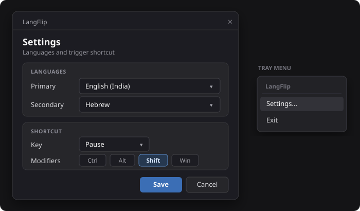
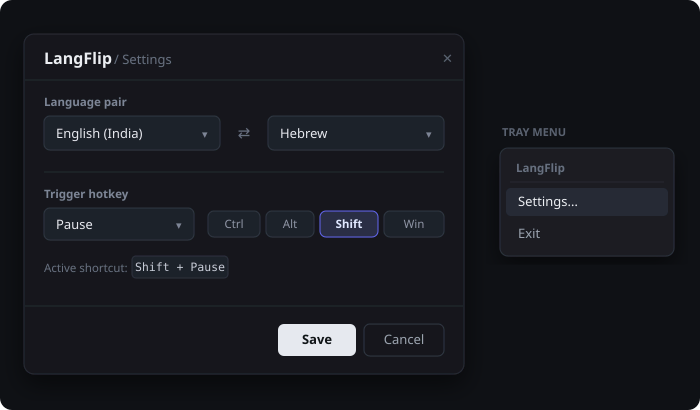
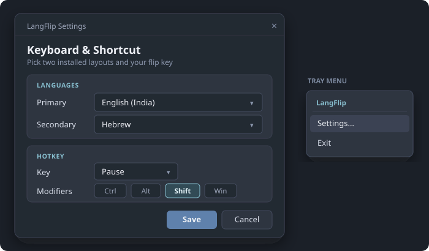
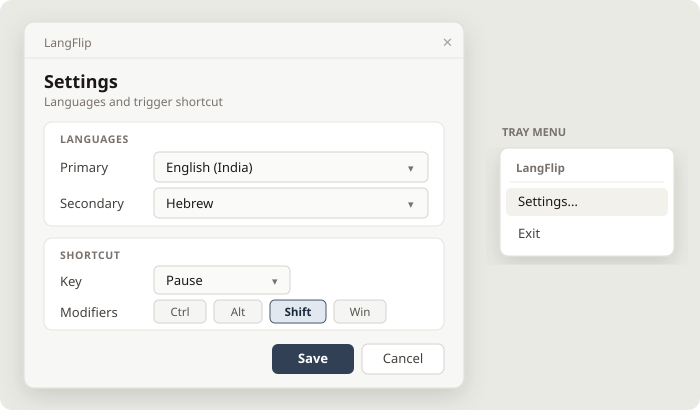

Four calm, understated options for the Windows 11 Settings dialog and system tray menu.
Warm charcoal surface, soft cards, dark-themed dropdowns, muted slate-blue Save, soft modifier pills.

Flat single surface, hairline dividers, side-by-side language pair, inline modifier pills, shortcut preview, monochrome Save.

Cool low-contrast slate-blue palette with frosted ice-blue accents and muted steel-blue Save.

Calm warm off-white surface, crisp white cards, muted charcoal Save (can auto-pair with Option 1/2 in dark mode).
